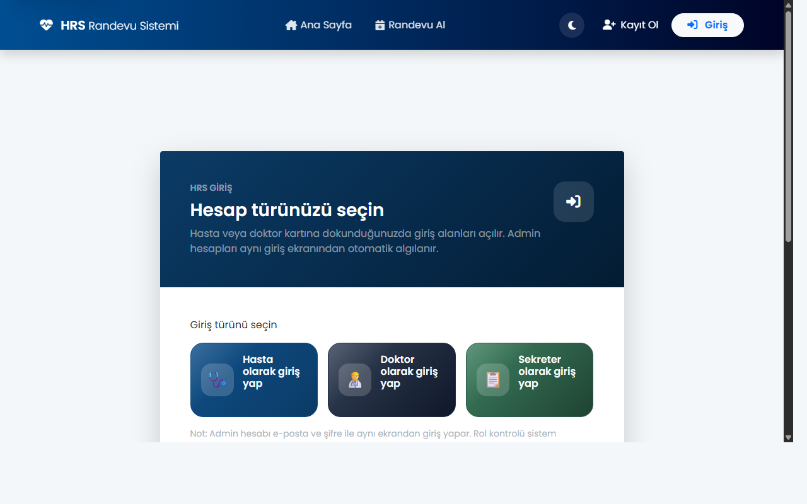
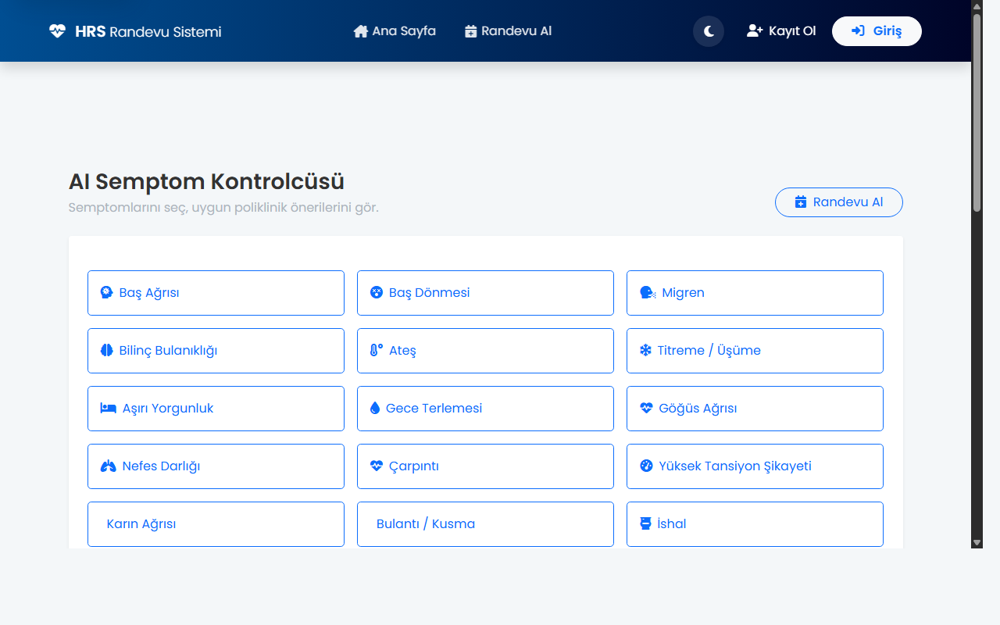
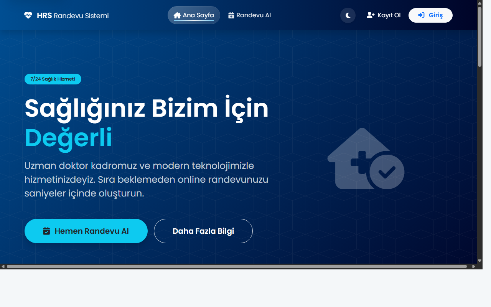

Hastane Randevu Sistemi — Hafta 9 Raporu
AI Semptom Kontrolcüsü, QR Kod Randevu Doğrulama, Dijital Reçete PDF, Serilog Loglama, Integration Testler, Sekreter Toplu Reçete Yönetimi
Genel Değerlendirme
Bu Hafta Yapılan Çalışmalar
🤖 AI Semptom Kontrolcüsü
Kural tabanlı semptom → poliklinik eşleştirme motoru. 30+ semptom, 15+ bölüm, güven skoru hesaplama. Hasta panelinden erişilebilir.
📱 QR Kod Randevu Doğrulama
QRCoder kütüphanesi ile her randevu için benzersiz QR bilet üretildi. Randevu detay sayfasında modal ile gösterilmektedir.
📄 Dijital Reçete PDF Çıktısı
Reçete önizleme sayfası yeniden tasarlandı: QR imza, doktor bilgileri, yazdır/PDF kaydet butonu.
📝 Serilog Loglama
Serilog.AspNetCore entegrasyonu tamamlandı. Günlük dönen log dosyaları Logs/hrs-*.log klasörüne yazılıyor.
🧪 Integration Testleri
xUnit test projesi genişletildi. 15+ senaryo: public sayfalar, auth gerektiren sayfalar, API güvenliği, semptom kontrolcüsü.
👩💼 Sekreter Paneli İyileştirmeleri
Sekreter arayüzünde AJAX ile sayfa yenilenmeden tüm bekleyen reçeteleri tek tıkla gönderme ("Tümünü Gönder") ve Tab (Sekme) hafızası eklendi.
🔧 Yetki ve Akış Düzeltmeleri
Doktor/Sekreter arası 404 (Sayfa Bulunamadı) hataları giderildi. Günlük kayıtlardaki alanlar dinamikleştirilerek gerçek Poliklinik isimleri yansıtıldı.
Ekran Görüntüleri

Giriş Ekranı — Rol Seçimi

Hasta Paneli — Dashboard

AI Semptom Kontrolcüsü

Ana Sayfa
Değişen / Eklenen Dosyalar
| Durum | Dosya | Açıklama |
|---|---|---|
| YENİ | Controllers/SymptomController.cs | Semptom analiz controller |
| YENİ | Services/SymptomCheckerService.cs | Kural tabanlı semptom analiz motoru |
| YENİ | Views/Symptom/Index.cshtml | Semptom seçim formu |
| YENİ | Views/Symptom/Result.cshtml | Poliklinik öneri sonuç ekranı |
| GÜNCELLEME | Views/DoctorTools/PrescriptionPreview.cshtml | QR imzalı reçete tasarımı |
| GÜNCELLEME | Controllers/AppointmentController.cs | GetQrTicket action eklendi |
| GÜNCELLEME | Program.cs | Serilog ve ISymptomCheckerService kaydı |
| GÜNCELLEME | Views/Shared/_Layout.cshtml | Navbar sadeleştirildi |
| YENİ | HastaneRandevuSistemi.Tests/IntegrationTests.cs | 15+ integration test |
| SİLİNDİ | Views/DoctorTools/Prescription.cshtml | Orphaned view |
| GÜNCELLEME | Controllers/SecretaryController.cs | SendAllPrescriptions (Toplu gönderim) ve dinamik poliklinik bilgisi eklendi. |
| GÜNCELLEME | Views/Secretary/Dashboard.cshtml | AJAX fetch çağrıları, Tümünü Gönder butonu ve tab hafızası eklendi. |
| SİLİNDİ | Views/Appointment/DoctorAccessRequests.cshtml | Erişim isteği kaldırıldı |